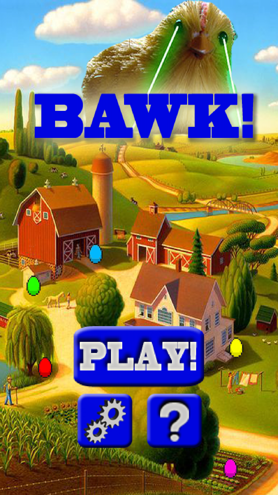
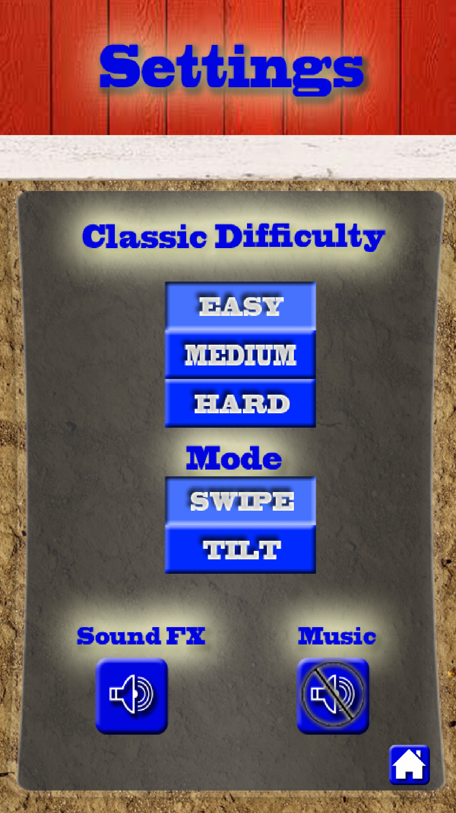
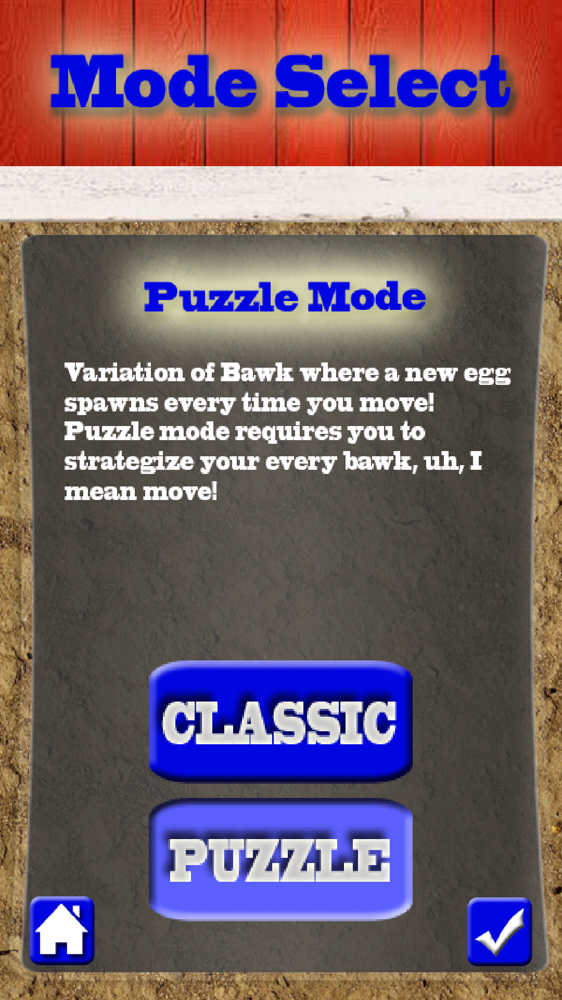

Features
Our application has many features that enhance its usability and the
experience of gameplay for the user. These features include an options
menu, a how to
play screen, a pause menu, and other options that are easily
accessible to the user through buttons. We detail these features below,
categorized by when they
are accessible.
The Home Screen
The user has several different options beginning from the home screen of
our application. These options are to begin a new game, to view the how-to
screen,
and to access the settings menu. The home screen appears as below.

Tapping the “Play” button begins a new round of gameplay, defaulting to
the level of difficulty “Easy”. Tapping the button with the gear image
on it takes the
user to the settings screen. Here, the user can select
a new level of difficulty (“Easy”, “Medium” or “Hard”), which will dictate
how quickly new eggs are
generated during gameplay (note that difficulty only applies to classic mode). The user can also
turn off and on both the sound effects and music. Sound effects include
noises that occur during gameplay,
such as the laser noise when a user
“fires”, while music refers to the background music that plays at different
times throughout the application. Both of
these settings default to “On”,
just as game difficulty defaults to “Easy”. The user can also select whether
they would like to
play in "Swipe mode" or "Tilt
mode". Swipe mode allows
the user to control the motion of the chicken during gameplay by swiping
a given direction on the
screen or to control it by
tilting their device
in a given direction. From here, the user can return to the home screen
by tapping the icon with the house on it,
as seen below.

During Gameplay
When the user hits the play button from the main menu, they are presented with choosing what game mode they would like to play. In classic mode, the eggs
generate as time progresses, which is what happens in Zoop. In puzzle mode, an egg will only generate each time the player moves the character. After selecting
a game mode, the user hits the check button in the bottom-right of the screen to begin playing the game. Alternatively, the user can select the home button to
return to the main menu.
During actual gameplay, the user has the option to access the “Pause” menu by
tapping the icon in the top-right corner of the screen. This will pause current
gameplay
and
open up a small menu that allows the user to resume gameplay, turn
sound effects and music off or on, and to end their current game. If the user
clicks the
button to exit the game, a confirmation screen is presented that asks if the user is sure they want to quit. This screen prevents incidents of the user accidentally quitting the game by unintentionally hitting the quit button on the “Pause” menu. If the user selects the “yes” button, they are returned to the
home screen, without their progress being saved or recorded. If the user selects the “no” button, the game is not ended and the user remains in the pause menu. Strangely
enough, resuming the game will take the user back to the normal gameplay screen and continue on from the point that they left off at.
The user is also kept up to date of their current score during gameplay, another notable feature that is recognizable next to the phrase “Score: “. This keeps
the user aware of their progress and is updated in real time as the user progresses through gameplay. These features can be seen in the following images:


Game Over and High Score
After the user has lost a game, the “Game Over” screen appears. This screen is temporarily shown to the user and has no notable features. It is replaced
automatically by the “High Score” screen after a few seconds. The high score screen tells the user the high score at their difficulty level followed by their own
final score from the most recent round of gameplay. From this point, the user can choose to either “Restart”, which begins a fresh round of gameplay, by
tapping the restart button, or to return to the home screen by tapping “Home”. This option allows them to return to the home screen to change settings,
reread the instructions, and to begin the game again if desired.